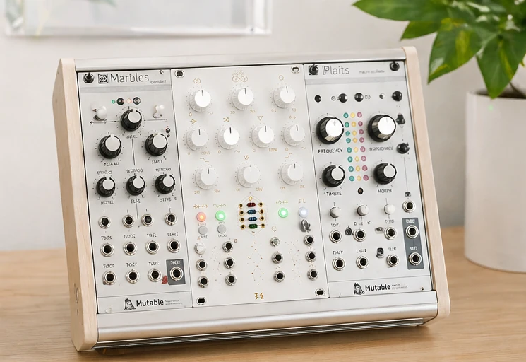
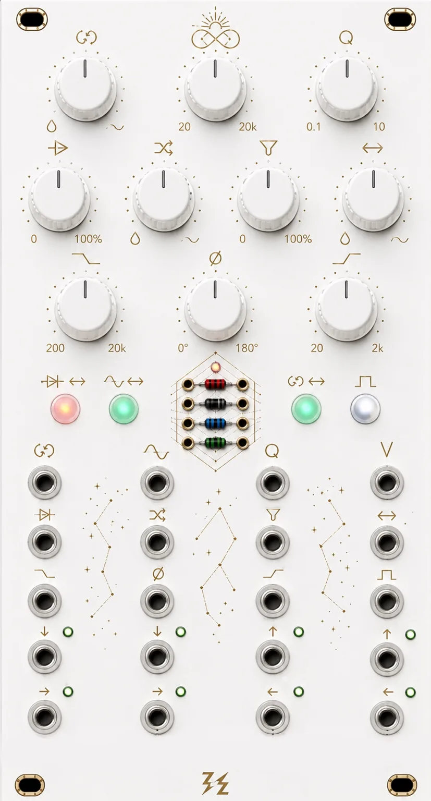

OUROBOROS
Route clipping, filtering, delay and external processors through a controllable feedback loop — from subtle stereo weight to unstable self-feeding motion.
OUROBOROS lets the diode clipper, SSI2144 filter and loop processor change position while you play. External modules can become part of the recursive path, or the internal PT2399 delay can keep the loop alive when nothing is patched into Send / Return.
The module is designed to stay playable at the edge of instability: loop-end HP / LP / Phase controls keep recursion tunable, while the reversible symbol/text panel makes the same instrument readable in studio and performance contexts.


What is OUROBOROS in one sentence?
A playable stereo feedback router: choose what enters the loop, where clipping and filtering happen, and how much of the result comes back.
Not another effect. A small instrument for controlled instability.
Most effects process sound once. OUROBOROS lets sound return into itself, then gives you clipping, filtering, delay, inserts, loop-end cleanup and phase control to shape the recursion.
Not only feedback.
Use it as a stereo processor, insert router, clipper, filter, phase/tone tool — then open the loop when you want recursion.
Stereo processor
Clip, filter, drive and shape voices, drums, samples or synth lines before feedback is involved.
Feedback laboratory
Open the loop when you want controlled recursion, self-interaction and unstable motion.
Insert router
Put external modules into the path or into the loop, then control how much returns.
Performance surface
Switch topology, ride CV and turn routing into a live gesture — subtle or destructive.
Sound changes
when the circuit changes
The same circuit sounds different depending on where it sits. Put clipping, filtering or delay inside the loop and the processor becomes part of the instrument’s behaviour.
Subtle stereo reinforcement
At lower Feedback Mix settings the module can behave less like a wild feedback unit and more like a stereo reinforcement stage: width, density and mild harmonic motion without immediate runaway.
Controlled recursive saturation
Move the clipper into the loop and let the THAT2181-driven drive stage feed the diode section harder. The result is not just more distortion, but a different feedback growth curve.
SSI2144 inside the loop
When SSI2144 is placed inside the loop, Freq, Q, V/Oct and Filter Drive stop acting like simple tone controls. They steer the spectral behaviour of the feedback path itself.
PT2399 keeps the loop alive
Without an external S/R processor, the PT2399 fallback keeps the loop active instead of leaving an empty insert point. The module still moves, breathes and reacts as a self-contained instrument.
Signal flow
The large diagram is the main promise of the module in one place: a playable stereo path where clipping, filtering, external processing and fallback delay can trade positions inside or outside the feedback loop.
Toggle switches above to reroute the signal graph in real time.
Hover or click any node →
ESC to return · click another node
The diagram explains the path. The panel is where you perform it.
Signal Flow shows what moves through the circuit. The interactive panel map shows the actual knobs, sockets and switches you touch to make feedback behave.
Interactive control map
The panel is the manual. Hover any control to understand what it does inside the feedback system.

How SW logic works
Each switch changes how the instrument behaves under your hands: short press performs the function, long press assigns the shared trigger input, and SW4 adds delay-specific control.
SW1
Short press moves the clipper between the main path and the loop. Long press assigns the global trigger input to SW1.
- Bi-colour indicator.
- Acts on routing, not on level.
SW2
Short press moves the SSI2144 section between the main path and the loop. Long press assigns the global trigger input to SW2.
- Bi-colour indicator.
- Changes tone and behavior of the loop, not just color.
SW3
Short press switches between LOOP and SERIES. LOOP closes the return path back into the crossfader; SERIES breaks recursion and turns the chain into a one-way processor path.
- Bi-colour indicator.
- Long press assigns the global trigger input to SW3.
SW4
Short press sends a tap-tempo event. Long press assigns the global trigger input to SW4. Extra-long press toggles the internal delay on or off.
- Mono LED with activity feedback.
- Tap tempo can come from the button or from the assigned trigger input.
- PT2399-based delay time is controlled by digital potentiometer under MCU control.
What it does in a patch
The architecture is built for musical behaviours you can reach quickly: stereo reinforcement, feedback threshold, filter-based voice creation, insert-driven mutation and self-contained motion without external processors.
From stereo width to recursive threshold
Feedback Mix can act like a threshold control between subtle stereo enlargement and true recursive behaviour. With loop-end HP and LP in place, the module can sit in a sweet spot where width, density and motion build up without instantly collapsing into chaos.
Filter self-oscillation as synth voice
Push the SSI2144 into self-oscillation and OUROBOROS stops reading like a processor in the usual sense. The module begins behaving like a non-trivial synthesizer voice: a resonant core with stable V/Oct behaviour, a clean sine-like foundation, and further shaping available through the clipper path, loop-end cleanup and the rest of the routing architecture.
External insert becomes part of the loop
SEND / RETURN does not just add another effect slot. Reverb, resonator, pitch shift or extra distortion can become part of the recursive path, making the loop behave like a changing system rather than a fixed processor chain.
Self-contained loop motion
If nothing is patched into SEND / RETURN, the internal PT2399 path can keep the loop moving. This makes OUROBOROS usable as a complete feedback instrument before any external processor is added.
Tech specs and I/O summary
Short version: 14HP, stereo feedback routing, SSI2144 filtering, external loop insert, internal delay fallback, CV control.
Technical specification
| Format | Eurorack stereo feedback instrument |
| Width | 14 HP panel concept |
| Core topology | Main path plus reroutable feedback loop with switchable processing order |
| Filter core | SSI2144 low-pass section with Q, frequency, drive and V/Oct-style control |
| Clipper | Diode clipping section with separate Drive CV and Crossfade CV control |
| Loop processor | External Send/Return insert or internal PT2399 delay fallback when nothing is patched |
| Loop cleanup | Loop-end HP, LP and phase controls for bandwidth, stability and stereo behaviour |
| Performance logic | Shared Trig CV can be assigned to switch actions; SW logic changes routing and delay behaviour in real time |
Full feedback topology without eating the rack.
Filter can become part of the feedback engine.
The loop still works without external inserts.
Drive and blend can move independently.
Patch another module into the recursion itself.
Switch actions can become rhythmic gestures.
Tune stereo behaviour before feedback returns.
Change the clipping personality physically.
Join the first build list
No payment today. Get build updates, final pricing and first availability before public release.
No payment today. The list is only for final pricing, availability and build timing before the public release.
Feedback is usually a problem. OUROBOROS makes it playable.
Opens your mail app with a ready message to vania.starginsky@gmail.com.
No spam · direct project updates · unsubscribe anytime